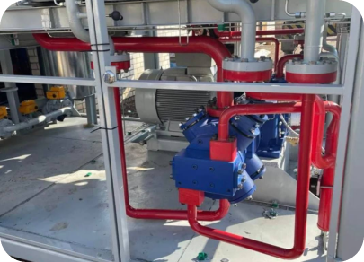
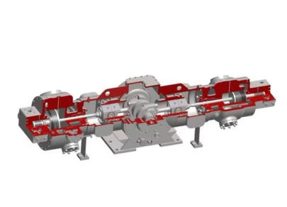
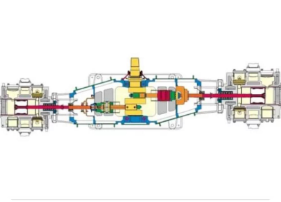
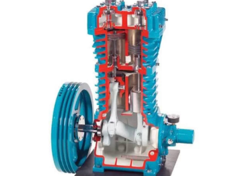
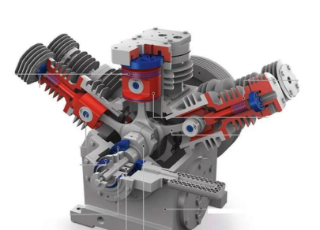

КОМПРЕССОРЫ ДЛЯ ГАЗОНАПОЛНИТЕЛЬНЫХ СТАНЦИЙ
«ВЫБОР ТИПА КОМПРЕССОРА И МАТЕРИАЛА ДЛЯ ЕГО ПРОИЗВОДСТВА САМАЯ СЛОЖНАЯ ЗАДАЧА».
ООО «ТНГ» — российский производитель — проектирует и производит автомобильные газонаполнительные компрессорные станции АГНКС на базе газовых бессмазочных компрессоров собственного производства.
Перед нами стояла задача, как получить безопасный компрессор. Мы понимали, что компрессор это техника, поломки могут быть. Но как сделать так, чтобы при поломке не было образования искры ? Мы изучали международный опыт, консультировались со специалистами и пришли к выводу, что компрессор будем выпускать из высокопрочного чугуна.
Высокопрочный чугун обладает повышенной прочностью и удовлетворительной пластичностью, но при этом он очень хрупкий. То есть при поломке не образует искры. При изучении мирового опыта мы удивились, когда узнали, что в Латинской Америке компрессоры из высокопрочного чугуна работают уже больше 20 лет. Более того, их используют национальные компании: REPSOL YPF, ESSO, PETROBRAS, CPI.

Пообщавшись с их специалистами, мы услышали множество положительных отзывов, особенно о компрессоре горизонтального исполнения. И это нас убедило в том, что выпускать компрессоры нужно именно из чугуна. Конечно, себестоимость компрессора растет, но для нас на первом месте стоит качество. Высокопрочный чугун в несколько раз дороже стали, но стальные компрессоры выпускает только Китай и пара компаний в России. Специалисты понимают, что отливку из чугуна получить очень трудно, учитывая, что у чугуна при отливке часто бывает «раковина». Из десяти отливок пять проходят ОТК, а пять уходят в брак. Но мы приняли решение не менять материал держать качество.
Второй вопрос, стоявший перед нами, какой тип компрессора выпускать, горизонтальный, вертикальный или W-образный.
Когда изучили вертикальный и W-образный компрессоры, мы сразу отказались от идеи выпускать такие компрессоры под природный газ. Проблемы были связаны с многочисленными отказами.
Горизонтальный компрессор

1. Фактически картер компрессора всегда под давлением газа, на компрессоре нет крейцкопфа и штока поршня, то есть коленвал сразу соединен с шатуном и поршнем. Кольца используются стальные, а значит, при поломке компрессора искры не избежать. Вертикальный и W-образный компрессоры отсутствует шток, нет сальников на газ и масло. Сальник на газ необходим, чтобы сдерживать газ, чтобы газ из цилиндров не попал в картер, также сальник удерживает масло, чтобы масло из картера не попадало в цилиндр.
2. Вертикальный и W-образный компрессоры соединяются с электродвигателем через муфту, то есть компрессор вращается 1000–1500 об/мин, это очень высокая скорость для компрессора.
3. Вертикальный и W-образный компрессоры охлаждается жидкостями, потому что работают на высокой скорости. Цилиндр компрессора маленького диаметра, что способствует увеличению скорости вращения и производительности.
4. Качество газа из вертикального и W-образного компрессора другое. На выходе из таких компрессоров вместе с газом присутствует масло, и всё это попадает в двигатель автомобиля.
5. Вертикальный и W-образный компрессоры используют стальные поршневые кольца, и износ цилиндров в несколько раз выше.
Горизонтальный компрессор

Теперь сравним с горизонтальным компрессором.
1. Горизонтальный компрессор имеет сапуны картера. Отсутствует газ благодаря тому, что компрессор имеет крейцкопф, шток и сальник на шток газовый и масляный.
2. Горизонтальный компрессор с электродвигателем соединяется через шкивы с ремнями, то есть ременный привод, и это дает нам возможность управлять оборотами (фактически мы не крутим компрессор больше 800 об/ мин). Надежность также достоинство данных компрессоров: даже если происходит заклинивание поршня, это приводит лишь к разрыву ремня, но не к выходу двигателя из строя. Привод вращает шкив, который, помимо своей основной функции, еще и охлаждает воздух цилиндров. Особенностью моделей является также то, что приводная конструкция совмещена с коленчатым валом. Это делает агрегат более выносливым.
3. Горизонтальный компрессор охлаждается воздушно, это большой плюс, отсутствуют насос и жидкости.
4. Высокое качество газа из горизонтального компрессора благодаря масляным сальникам, которые на дают маслу попасть в цилиндр.
5. Горизонтальный компрессор использует кольца из композитного материала, срок службы которых составляет на менее 8000 часов, и композитные кольца не изнашивают ни поршень, ни цилиндр.
Вертикалный компрессор

После изучения всех нюансов мы приняли решение выпускать именно горизонтальный компрессор.
Сегодня компания «ТНГ», кроме компрессоров, производит электромагнитные клапаны высокого давления, разрывные муфты, обратные клапаны.
В настоящее время ведутся переговоры по возможности приобретения технологии производства кранов высокого давления.
Мы начинаем пополнять станочный парк.
W-образный компрессор
